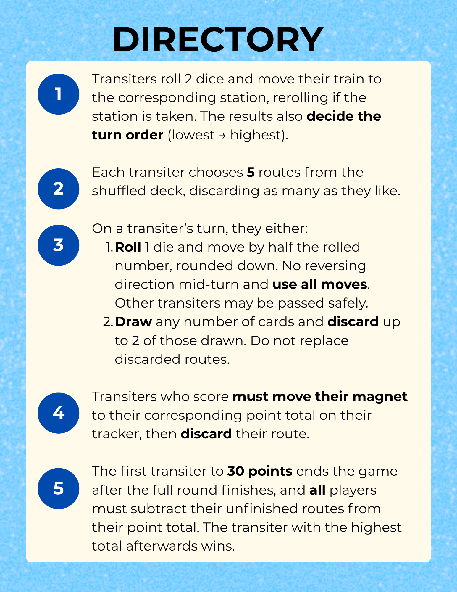
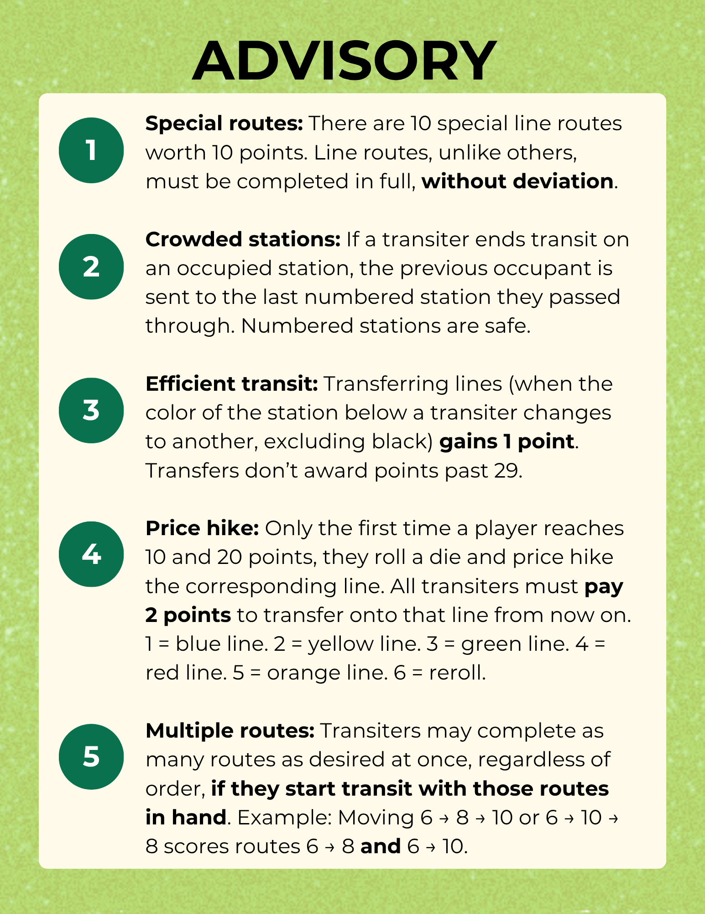

ISOGE 急げ
/I-SO-GE/ : imperative form of ISOGU (急ぐ), "to hurry"
Solo project | Analog racing game, wall-mounted poster | Players: 4

ISOGE is a solo analog racing game I designed for Advanced Game Design, played on a large-format poster mounted to the wall. Players are commuters racing across a stylized map of Japan, moving magnetic train tokens between twelve stations connected by five color-coded lines, completing route cards, and racing to 30 points, with everyone penalized at the end for any routes they didn't finish.
I grew up in Tokyo where the train was just daily life, and what I always loved about it was how everyone was using the exact same network in completely different ways, all constantly in each other's way. That became the game! The board looks like an actual transit map, which is why it's mounted to the wall rather than on a table, because that's where metro maps live. I designed it in Adobe Illustrator with twelve stations and landmark illustrations, and the train tokens are magnetic so they cling right to the poster. Fabricated at the Harvey Mudd Makerspace and Scripps Fab Lab.
How It Works
To set up, each transiter rolls 2 dice and moves their train to the corresponding station, rerolling if it's taken. The roll also decides turn order for the round, lowest goes first. Everyone draws 5 route cards and can discard as many as they want before play begins.
On your turn you either move or draw, not both. To move, roll 1 die and travel half the result rounded down along the network, using all your moves without reversing mid-turn. To draw, pull any number of route cards and discard up to 2. When you complete a route, you move your magnetic score token up the tracker and discard the card. First to 30 ends the game after the full round finishes, then everyone subtracts their incomplete routes from their score and the highest total wins.
Advanced Rules
- Special routes: 10 line routes worth 10 points each, but must be completed in full with no deviation
- Crowded stations: landing on an occupied station bumps the previous occupant back to the last numbered station they passed through (numbered stations are safe)
- Efficient transit: transferring between lines earns 1 point, up to a max of 29
- Price hike: the first time any player hits 10 and 20 points, they roll a die and price hike the corresponding line, and from then on all transiters pay 2 points to board it
- Multiple routes: you can complete as many routes as you want in one move, as long as you were holding those cards when you started moving


Photos